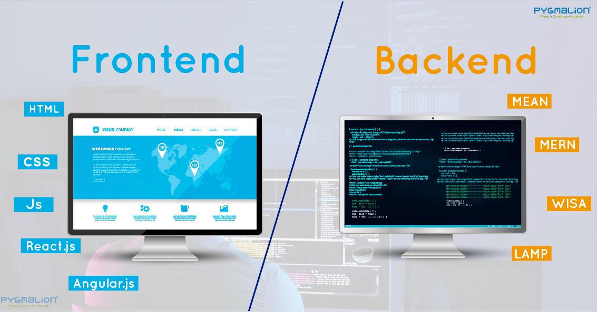

PROGRAMADOR FULL STACK

Qué es un Desarrollador Full Stack?
Es un profesional que cuenta con diversas habilidades informáticas; es decir, es un perfil híbrido,
multiskill que puede desenvolverse en el front-end, back-end de un desarrollo web. Son integrales
con conocimientos y herramientas que le permiten afrontar cualquier etapa en la construcción de
portales en línea.
Para detallarte un full stack conoce marcos y lenguaje de programación tales como:
- HTML, JavaScript, Angular JS, Bootstrap.
- PHP, Java, C#, C++, Drupal, Python, Django.
- Servidores.
- Base de datos.
- Redes.
- Alojamiento.
- API 's.
¿Qué hace un Desarrollador full stack?
Para ser más específico, un desarrollador full stack hace taras como:
- El desarrollo de la interfaz y arquitectura del sitio web.
- Diseña interfaces de usuario y otras funcionalidades front-end.
- Es capaz de desarrollar aplicaciones back-end.
- Tiene la responsabilidad de crear servidores y base de datos para su correcta operatividad.
- Garantiza la funcionalidad de las aplicaciones y páginas en dispositivos móviles.
- La velocidad y escalabilidad del proyecto también está entre sus funciones.
- Administra proyectos complejos.
- Asesora a otros departamentos del área tecnológica.
Front End, ¿qué es?
Front End es la parte de un sitio web o aplicación web con la que los usuarios interactúan
directamente. Y hace referencia a todos los aspectos visibles que forman parte del proyecto, es
decir, el contenido que el usuario ve. Incluye textos, gráficos, efectos visuales, y elementos que
permiten navegar de manera funciona en un entorno web. ¡Ahora mismo te encuentras en uno!
Del lado del Back End
Back End implica el desarrollo Web en el ámbito del servidor, y procesa toda la información
recibida a través del front-end para que funcione la aplicación web. A diferencia del Front